Global and local influence analysis with the mixpoissonreg package
Alexandre B. Simas
2021-02-28
Source:vignettes/influence-mixpoissonreg.Rmd
influence-mixpoissonreg.RmdGlobal Influence
In the mixpoissonreg package the following global influence methods are implemented: hatvalues, cooks.distance and influence. Below, we discuss the implementations of these methods in detail. Notice that in this vignette we do not provide interpretations of the influence results, we focus on how to compute the measures. For interpretations of the influence measures we refer the reader to the Analyzing overdispersed count data with the mixpoissonreg package vignette. We also do not provide examples on customization of the plots since virtually all the arguments related to the customization of plots for the local_influence_plot and local_influence_autoplot methods are the same as their counterparts plot and autoplot, respectivelly. Therefore, we refer the reader to the Building and customizing base-R diagnostic plots with the mixpoissonreg package and Building and customizing ggplot2-based diagnostic plots with the mixpoissonreg package for examples on how to customize the plots (change point and line types, colors, sizes, as well as change titles, captions, colors, etc.).
hatvalues method
To define “hat values” for mixed Poisson regression models, we follow Zhu et al. (2001) to consider the negative of the hessian of the Q-function as weight matrix, and follow Pregibon (1981) to define the “hat” matrix with respect to this weight matrix. We can consider the hessian of the Q-function with respect to mean-related parameters, which is the default. We can also consider the hessian of the Q-function with respect to the precision-related parameters to give rise to hat values related to the precision parameters.
To obtain the mean-related hat values one simply calls the hatvalues method:
library(mixpoissonreg)
fit <- mixpoissonreg(daysabs ~ gender + math + prog | gender + math + prog,
data = Attendance)
head(hatvalues(fit))
#> 1 2 3 4 5 6
#> 0.009079739 0.006988288 0.004624419 0.006642724 0.009645108 0.026264888The hat values are used to obtain Cook’s distance. One can also use the hat values to define leverage-adjusted residuals by dividing the residuals by sqrt(hatvalues(fitted_object)).
To obtain precision-related hat values one must set parameters to “precision”:
cooks.distance method
The implementation of the cooks.distance method for mixpoissonreg models contains several “Cook’s distance”-like measures. More precisely, it contains the standard Cook’s distance, the generalized Cook’s distance, the likelihood displacement and the Q-displacement.
Cook’s distance
The implementation of the standard Cook’s distance uses the usual formula for Cook’s distance in terms of the “hat” matrix, where the “hat” matrix is the one given above. The standard Cook’s distance returned by default in the cooks.distance method. So, to obtain Cook’s distance, we simply call the cooks.distance method:
head(cooks.distance(fit))
#> 1 2 3 4 5 6
#> 7.412875e-05 1.938615e-04 6.180147e-04 6.839705e-04 1.170998e-03 5.061612e-03Since there is also a “hat” matrix with respect to the precision parameters, we may compute Cook’s distance using the hat values with respect to the precision parameters. To compute Cook’s distance with the “hat” matrix with respect to the precision parameters we simply set the hat argument to “precision”:
head(cooks.distance(fit, hat = "precision"))
#> 1 2 3 4 5 6
#> 0.0000267023 0.0001141196 0.0021835715 0.0013027589 0.0025212380 0.0013807438generalized Cook’s distance and Q-displacement
The Generalized Cook’s distance and Q-displacement (also called Q-distance) for EM-based models were defined in Zhu et al. (2001) and computed for mixed Poisson regression models in Barreto-Souza and Simas (2016). We implemented first-order approximation to these quantities to make it computationally feasible. These first-order approximations are available in Barreto-Souza and Simas (2016). We also provide versions of generalized Cook’s distance for mean-related or precision-related parameters, whose details can be found in Barreto-Souza and Simas (2016).
To compute the generalized Cook’s distance with respect to the mean and precision parameters jointly, simply set the type argument to “GCD”:
head(cooks.distance(fit, type = "GCD"))
#> 1 2 3 4 5 6
#> 0.004246910 0.002821262 0.002072318 0.001018639 0.001979334 0.003445146To compute the generalized Cook’s distance with respect to the mean-related parameters, set the type argument to “GCDmean”:
head(cooks.distance(fit, type = "GCDmean"))
#> 1 2 3 4 5 6
#> 6.176761e-05 1.885887e-04 1.180572e-03 1.009911e-03 1.806187e-03 1.660795e-03and to compute the generalized Cook’s distance with respect to the precision-related parameters, set the type argument to “GCDprecision”:
head(cooks.distance(fit, type = "GCDprecision"))
#> 1 2 3 4 5 6
#> 4.185142e-03 2.632673e-03 8.917459e-04 8.727751e-06 1.731469e-04 1.784352e-03To compute the Q-displacement one sets the type argument to “QD”:
head(cooks.distance(fit, type = "QD"))
#> 1 2 3 4 5 6
#> 0.004222877 0.002776973 0.002041359 0.001022342 0.001969761 0.003506476Likelihood displacement
The likelihood displacement (also called likelihood distance) was defined in Cook and Weisberg (1982). To compute this measure, one simply set the type argument to “LD”:
head(cooks.distance(fit, type = "LD"))
#> 1 2 3 4 5 6
#> 0.0019138351 0.0013800327 0.0006547844 0.0001521722 0.0003604836 0.0012531224
influence method
The influence method returns a list with several quantities:
- hat.mean hat values with respect to the mean;
- hat.precision hat with respect to the precision parameters;
- pear.res Pearson residuals;
- score.res Score residuals
and if the argument do.coef is TRUE the returned list also contains:
- coefficients.mean first-order approximation to the impact on the estimate of each mean-related parameter if each observation is removed;
- coefficients.precision first-order approximation to the impact on the estimate of each precision-related parameter if each observation is removed.
For the two elements above, the ith row corresponds to the parameter estimates with the ith observation removed.
The influence method has only one argument, do.coef, which, by default, is set to TRUE since its computation is not computationally intensive.
Let us call this method on the fit object:
influence_fit <- influence(fit)
head(influence_fit$coefficients.mean)
#> (Intercept) gendermale math progAcademic progVocational
#> 1 2.745886631 -1.269649740 -0.426834669 -0.006599528 -0.245424207
#> 2 -0.244893977 2.746348319 -1.269386963 -0.425421206 -0.006613588
#> 3 -0.006613246 -0.245462581 2.751482711 -1.270173978 -0.425953726
#> 4 -0.425848228 -0.006619664 -0.246447333 2.746481615 -1.270762217
#> 5 -1.269850559 -0.426202055 -0.006650788 -0.245225919 2.746880872
#> 6 2.746076794 -1.269674897 -0.429480315 -0.006616788 -0.246166667Global influence plots
The main global influence plots are implemented in the plot and autoplot methods. They are the plots number 3, 4 and 5, which are, respectively, the Cook’s distance plot, the generalized Cook’s distance plot and Cook’s distance vs generalized Cook’s distance. The plot and autoplot methods provide the same plots, the difference between them being that the former uses R’s base graphics whereas the latter uses the ggplot2 package.
Let us build these plots:


and
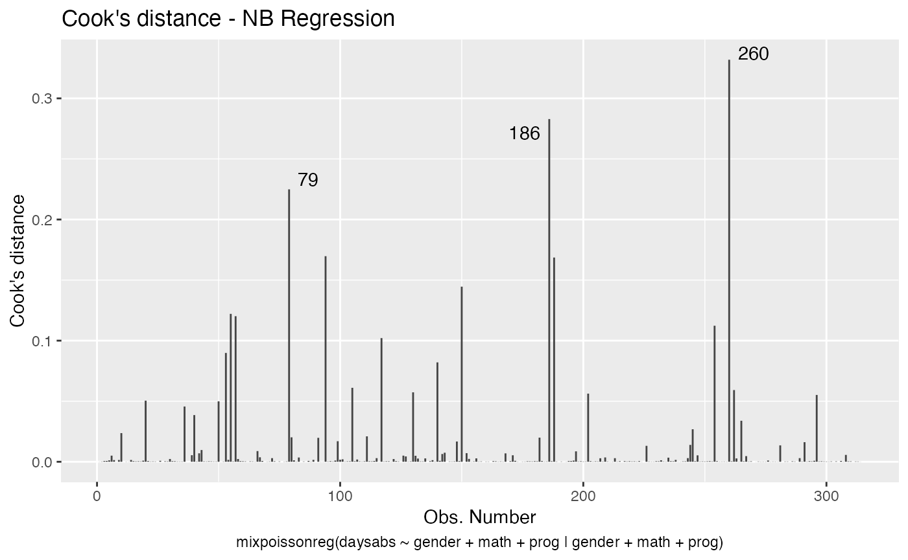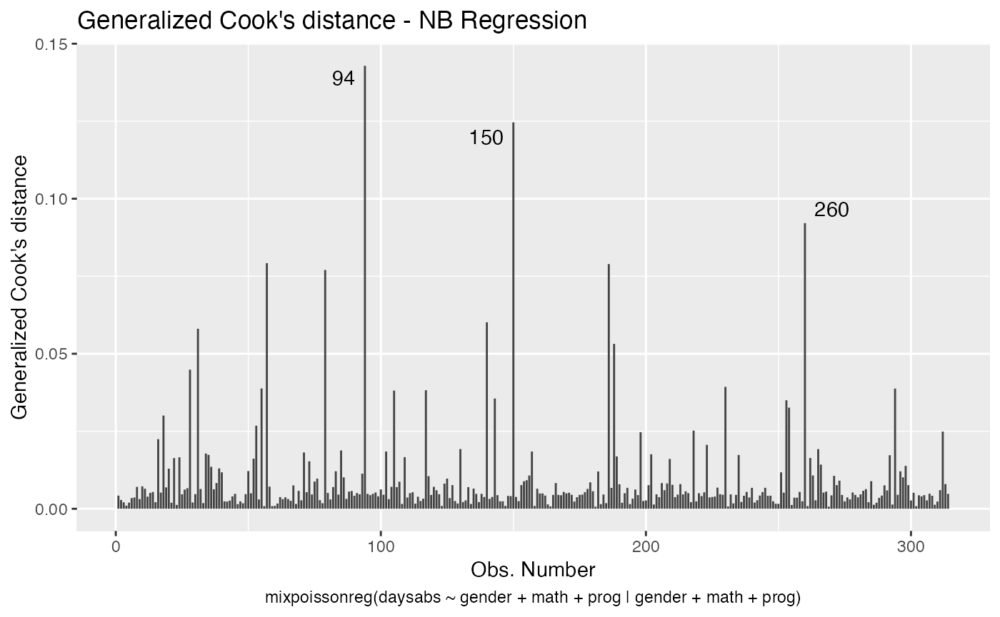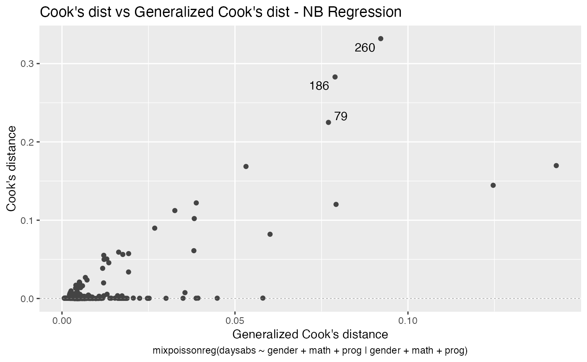
These plots identify the most extreme points. By the default they identify 3 points, but the number of identified points can be changed by setting the id.n argument to the desired value for the plot method and by setting the label.n argument to the desired value for the autoplot method:


and
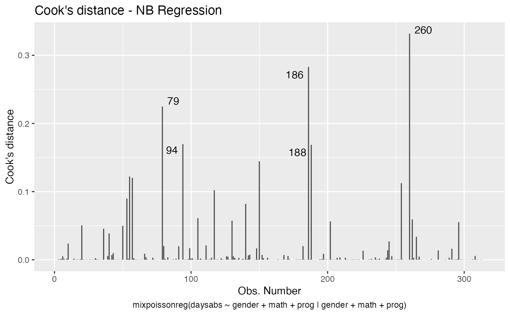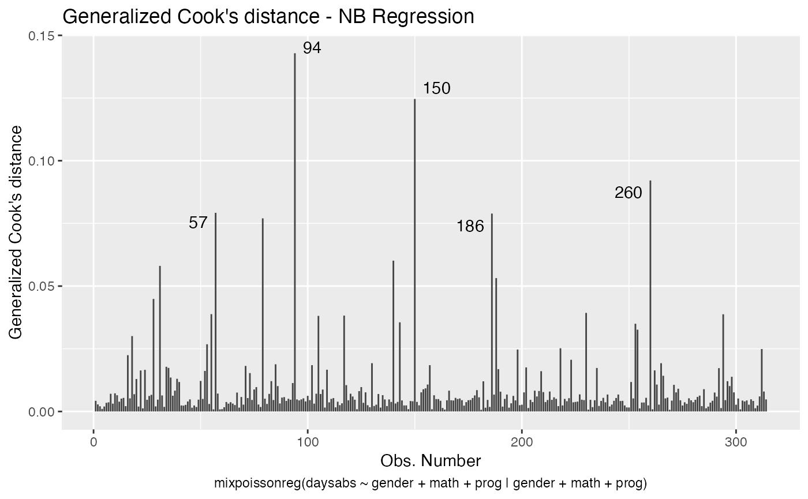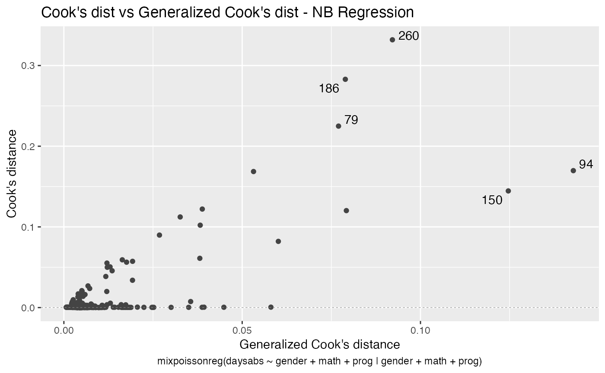
For further details customizing plots of mixpoissonreg objects, we refer the reader to the Diagnostic plots with the mixpoissonreg package vignette.
We now turn to the problem of plotting Q-displacements and likelihood displacements. Both of these plots can easily be built “by hand”.
R’s base graphics:
qd_fit <- cooks.distance(fit, type = "QD")
# Get the extreme points:
extreme_points <- as.vector(Rfast::nth(abs(qd_fit), k = 5,
num.of.nths = 5,
index.return = TRUE, descending = TRUE))
idx_y <- qd_fit[extreme_points]
ylim <- range(qd_fit, na.rm = TRUE)
ylim <- extendrange(r = ylim, f = 0.15)
plot(qd_fit, xlab = "Obs. number", ylab = "Q-displacement", ylim = ylim, type = "h")
text(extreme_points, idx_y, labels = extreme_points, pos = 3, offset = 0.2)and
ld_fit <- cooks.distance(fit, type = "LD")
# Get 5 most extreme points:
extreme_points <- as.vector(Rfast::nth(abs(ld_fit), k = 5,
num.of.nths = 5,
index.return = TRUE, descending = TRUE))
idx_y <- ld_fit[extreme_points]
ylim <- range(ld_fit, na.rm = TRUE)
ylim <- extendrange(r = ylim, f = 0.15)
plot(ld_fit, xlab = "Obs. number", ylab = "Likelihood displacement", ylim = ylim, type = "h")
text(extreme_points, idx_y, labels = extreme_points, pos = 3, offset = 0.2)
Now the ggplot2 version:
library(dplyr)
library(ggplot2)
library(ggrepel)
qd_fit <- cooks.distance(fit, type = "QD")
qd_tbl <- tibble("Q-displacement" = qd_fit, "Obs. number" = 1:length(qd_fit))
# Get 5 most extreme points
qd.extreme <- arrange(qd_tbl, desc(`Q-displacement`))
qd.extreme <- head(qd.extreme, 5)
ggplot(qd_tbl, aes(x = `Obs. number`, y = `Q-displacement`)) +
geom_linerange(aes(ymin = 0, ymax = `Q-displacement`)) +
geom_text_repel(data = qd.extreme, aes(label = `Obs. number`))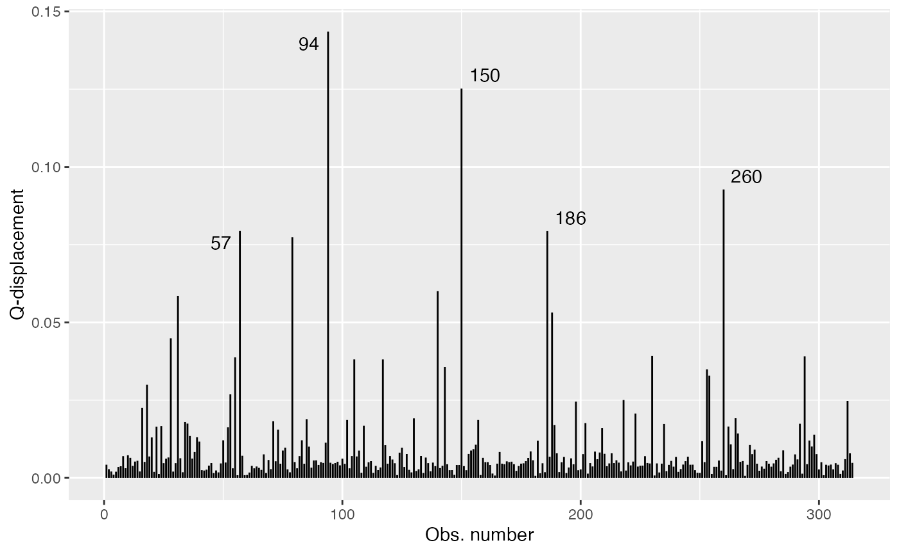
and
ld_fit <- cooks.distance(fit, type = "LD")
ld_tbl <- tibble("Likelihood displacement" = ld_fit, "Obs. number" = 1:length(ld_fit))
# Get 5 most extreme points
ld.extreme <- arrange(ld_tbl, desc(`Likelihood displacement`))
ld.extreme <- head(ld.extreme, 5)
ggplot(ld_tbl, aes(x = `Obs. number`, y = `Likelihood displacement`)) +
geom_linerange(aes(ymin = 0, ymax = `Likelihood displacement`)) +
geom_text_repel(data = ld.extreme, aes(label = `Obs. number`))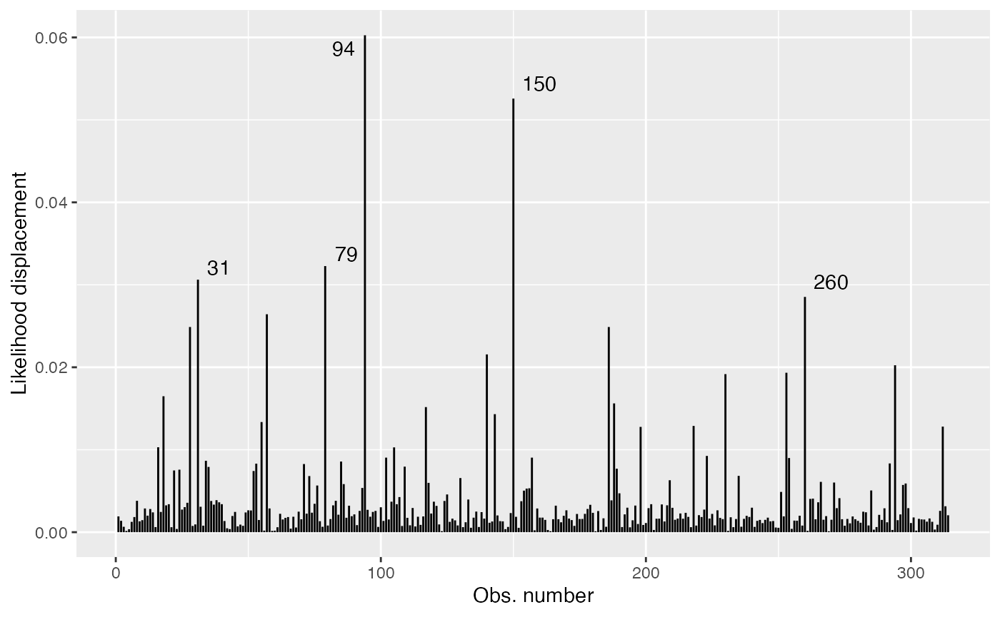
Local Influence
The mixpoissonreg package contains the local_influence method implemented. This method contains conformal normal curvatures and normal curvatures under several perturbation schemes. It returns a list whose elements are the perturbation schemes contained in the perturbation argument.
The local influence was introduced in the seminal paper Cook (1986), in which the normal curvatures under different perturbations schemes were introduced. Cook suggested the analysis of the perturbation schemes in the directions of largest curvatures. Lesaffre and Verbeke (1998) suggested the analysis for each canonical direction and called this “total local influence”. Poon and Poon (1999) introduced the conformal normal curvature which has the advantadge of taking values in the standard unit interval [0,1]. Finally, Zhu and Lee (2001) introduced local influence measures for EM-based models. They computed normal and conformal normal curvatures for EM-based models.
Below, we discuss the arguments of the local_influence method in detail. Notice that in this vignette we do not provide interpretations of the influence results, we focus on how to compute the measures. For interpretations of the influence measures we refer the reader to the Analyzing overdispersed count data with the mixpoissonreg package vignette.
Curvature
By default, the local_influence method for mixpoissonreg objects returns the conformal normal curvature since it takes values in the standard unit interval [0,1]. For conformal normal curvatures the benchmark suggested by Zhu and Lee (2001) is returned as the benchmark attribute to each returned element, i.e., for each perturbation considered.
For example:
fit <- mixpoissonreg(daysabs ~ gender + math + prog | gender + math + prog,
data = Attendance)
loc_inf_fit <- local_influence(fit)
ls(loc_inf_fit)
#> [1] "case_weights" "hidden_variable"
#> [3] "mean_explanatory" "precision_explanatory"
#> [5] "simultaneous_explanatory"
head(loc_inf_fit$case_weights)
#> 1 2 3 4 5 6
#> 0.0014599080 0.0009698306 0.0007123753 0.0003501649 0.0006804113 0.0011842955
attr(loc_inf_fit$case_weights, "benchmark")
#> [1] 0.01398709To compute the normal curvature, simply set the curvature argument to “normal”. For normal curvature the benchmark attribute contains the benchmark suggested by Verbeke and Molenberghs (2000, sect. 11.3). For example:
loc_inf_normal_fit <- local_influence(fit, curvature = "normal")
ls(loc_inf_normal_fit)
#> [1] "case_weights" "hidden_variable"
#> [3] "mean_explanatory" "precision_explanatory"
#> [5] "simultaneous_explanatory"
head(loc_inf_normal_fit$case_weights)
#> 1 2 3 4 5 6
#> 0.004246910 0.002821262 0.002072318 0.001018639 0.001979334 0.003445146
attr(loc_inf_normal_fit$case_weights, "benchmark")
#> [1] 0.01852883Direction
The default direction of local_influence method for mixpoissonreg objects is the canonical direction, that is, it computes the total local influence (Lesaffre and Verbeke, 1998).
For canonical directions the local_influence method also returns benchmarks for each perturbation scheme, following Zhu and Lee (2001) for conformal normal curvatures and Verbeke and Molenberghs (2000, sect. 11.3) for normal curvatures.
To change the directions to the directions of largest curvatures one must set the direction argument to “max.eigen”.
For mixed Poisson regression models (and actually for very large class of regression models) both the normal and conformal normal curvatures are quadratic forms with respect to the direction, that is, by seeing the direction as the variable. The name “max.eigen” for the direction of largest curvature comes from the fact that the direction of largest curvature is the direction of the eigenvector of the associated quadratic form associated to the eigenvalue with largest absolute value.
Notice that for direction of largest curvature no benchmark is returned, so if one calls the benchmark attribute, the returned value will be NA:
# Conformal normal curvature
loc_inf_fit_larg_curv <- local_influence(fit, direction = "max.eigen")
ls(loc_inf_fit_larg_curv)
#> [1] "case_weights" "hidden_variable"
#> [3] "mean_explanatory" "precision_explanatory"
#> [5] "simultaneous_explanatory"
head(loc_inf_fit_larg_curv$case_weights)
#> 1 2 3 4 5 6
#> -0.057396784 -0.068340607 0.021970870 -0.004724743 0.006115203 -0.015803801
attr(loc_inf_fit_larg_curv$case_weights, "benchmark")
#> [1] NA
# Normal curvature
loc_inf_normal_fit_larg_curv <- local_influence(fit, curvature = "normal",
direction = "max.eigen")
ls(loc_inf_normal_fit_larg_curv)
#> [1] "case_weights" "hidden_variable"
#> [3] "mean_explanatory" "precision_explanatory"
#> [5] "simultaneous_explanatory"
head(loc_inf_normal_fit_larg_curv$case_weights)
#> 1 2 3 4 5 6
#> -0.057396784 -0.068340607 0.021970870 -0.004724743 0.006115203 -0.015803801
attr(loc_inf_normal_fit_larg_curv$case_weights, "benchmark")
#> [1] NAPerturbation
The available perturbation schemes are “case_weights”, “hidden_variable”, “mean_explanatory”, “precision_explanatory”, “simultaneous_explanatory”. For mixed Poisson regression models, these perturbation schemes are given in Barreto-Souza and Simas (2016). The case weights and explanatory variable perturbations were introduced by Cook (1986) whereas the hidden variable perturbation requires a latent variable and was introduced by Barreto-Souza and Simas (2016). Notice that there is not a response variable perturbation scheme since the response variable is discrete, so it does not make sense to do such a perturbation.
By default, the local_influence method for mixpoissonreg object returns a list with all the available perturbation schemes.
loc_inf_fit <- local_influence(fit)
ls(loc_inf_fit)
#> [1] "case_weights" "hidden_variable"
#> [3] "mean_explanatory" "precision_explanatory"
#> [5] "simultaneous_explanatory"Notice that if there is no precision covariates, then the returned values for “precision_explanatory” and “simultaneous_explanatory” are NA and a warning message is generated:
fit2 <- mixpoissonreg(daysabs ~ gender + math + prog,
data = Attendance)
loc_inf_fit2 <- local_influence(fit2)
#> Warning in local_influence.mixpoissonreg(fit2): Precision explanatory and simultaneous explanatory should not be considered since
#> there is only the intercept for the precision parameter.
ls(loc_inf_fit2)
#> [1] "case_weights" "hidden_variable"
#> [3] "mean_explanatory" "precision_explanatory"
#> [5] "simultaneous_explanatory"
head(loc_inf_fit2$case_weights)
#> 1 2 3 4 5 6
#> 0.0007928476 0.0007005787 0.0006602506 0.0005594278 0.0008113136 0.0017174080
head(loc_inf_fit2$precision_explanatory)
#> 1 2 3 4 5 6
#> NA NA NA NA NA NA
head(loc_inf_fit2$simultaneous_explanatory)
#> 1 2 3 4 5 6
#> NA NA NA NA NA NATo select a subset of perturbations, enter a list or vector with the desired perturbations as the perturbation argument:
loc_inf_1 <- local_influence(fit, perturbation = c("case_weights", "hidden_variable"))
ls(loc_inf_1)
#> [1] "case_weights" "hidden_variable"
head(loc_inf_1$case_weights)
#> 1 2 3 4 5 6
#> 0.0014599080 0.0009698306 0.0007123753 0.0003501649 0.0006804113 0.0011842955
loc_inf_2 <- local_influence(fit, perturbation = c("case_weights", "hidden_variable"),
curvature = "normal",
direction = "max.eigen")
ls(loc_inf_2)
#> [1] "case_weights" "hidden_variable"
head(loc_inf_2$case_weights)
#> 1 2 3 4 5 6
#> -0.057396784 -0.068340607 0.021970870 -0.004724743 0.006115203 -0.015803801Parameters
The parameters argument of the local_influence method for mixpoissonreg objects refer to the “case_weights” and “hidden_variable” perturbation schemes. One can obtain case weights and hidden variable perturbations with respect to all parameters, with respect to the mean-related parameters and with respect to the precision-related parameters.
By default, the case weights and hidden variable perturbations are returned with respect to all parameters. To return case weights and hidden variable perturbations with respect to the mean-related parameters, one must set the parameters argument to “mean”:
loc_inf_fit_mean <- local_influence(fit, parameters = "mean")
head(loc_inf_fit_mean$case_weights)
#> 1 2 3 4 5 6
#> 6.649621e-05 2.030260e-04 1.270950e-03 1.087224e-03 1.944459e-03 1.787936e-03Analogously, to return case weights and hidden variable perturbations with respect to the precision-related parameters, one must set the parameters argument to “precision”:
loc_inf_fit_precision <- local_influence(fit, parameters = "precision")
head(loc_inf_fit_precision$case_weights)
#> 1 2 3 4 5 6
#> 2.113563e-03 1.329541e-03 4.503457e-04 4.407651e-06 8.744190e-05 9.011256e-04Perturbation schemes with respect to a subset of the covariates
The mean.covariates argument refers to the “mean.explanatory” and “simultaneous.explanatory” perturbations schemes, whereas the precision.covariates argument refers to the “precision.explanatory” and “simultaneous.explanatory” perturbations schemes. The idea is that only the covariates listed in these arguments will be perturbed, so one can see the influence of observations with respect to those covariates. If mean.covariates is NULL, then all the mean-related covariates will be considered. Analogously, if precision.covariates is NULL, then all the precision-related covariates will be considered.
Remark: Notice that factor and integer-valued covariates should not be perturbed since it does not make sense to make infinitesimal perturbations on them. You should only perturb continuous variables.
By default both mean.covariates and precision.covariates are NULL, so all non-factor covariates are perturbed. Notice that integer non-factor covariates will be perturbed, so you should manually remove them.
Let us consider, for example, the following model:
set.seed(1234)
x1 <- rexp(200, rate = 2)
x2 <- rnorm(200)
x3 <- factor(as.integer(2*runif(200) + 1))
x4 <- as.integer(10*runif(200))
y <- stats::rnbinom(200, mu = exp(1-x1-x2-(x3==2)+0.1*x4),
size = exp(1+2*x1+x2))
fit_example <- mixpoissonreg(y ~ x1 + x2 + x3 + x4 | x1 + x2)
summary(fit_example)
#>
#> Negative Binomial Regression - Expectation-Maximization Algorithm
#>
#> Call:
#> mixpoissonreg(formula = y ~ x1 + x2 + x3 + x4 | x1 + x2)
#>
#>
#> Pearson residuals:
#> RSS Min 1Q Median 3Q Max
#> 184.5453 -1.5734 -0.6603 -0.3186 0.4244 3.8463
#>
#> Coefficients modeling the mean (with link):
#> Estimate Std.error z-value Pr(>|z|)
#> (Intercept) 0.88326 0.18901 4.673 2.97e-06 ***
#> x1 -1.28119 0.18554 -6.905 5.02e-12 ***
#> x2 -0.99689 0.08599 -11.593 < 2e-16 ***
#> x32 -1.16354 0.15225 -7.642 2.13e-14 ***
#> x4 0.14923 0.02512 5.940 2.86e-09 ***
#>
#> Coefficients modeling the precision (with link):
#> Estimate Std.error z-value Pr(>|z|)
#> (Intercept) 1.0732 0.4655 2.305 0.02114 *
#> x1 2.6328 1.0926 2.410 0.01597 *
#> x2 1.0744 0.3353 3.204 0.00136 **
#> ---
#> Signif. codes: 0 '***' 0.001 '**' 0.01 '*' 0.05 '.' 0.1 ' ' 1
#>
#> Efron's pseudo R-squared: 0.521234
#> Number of iterations of the EM algorithm = 39Remark: Notice that since x3 is a factor and x4 is integer-valued, they are discrete and it does not make sense to make infinitesimal perturbations on them. You should only perturb continuous variables.
To consider the “mean_explanatory” and “simultaneous_explanatory” perturbation schemes with respect to the “x1” covariate, we simply set the mean.covariates argument to “x1”:
loc_inf_x1 <- local_influence(fit_example, mean.covariates = "x1")
head(loc_inf_x1$mean_explanatory)
#> 1 2 3 4 5 6
#> 9.183691e-09 3.334748e-06 1.352123e-06 4.736427e-07 5.714998e-09 1.752997e-06To consider more than one covariate, simply enter the covariates as a vector. For instance, to consider the “mean_explanatory” and “simultaneous_explanatory” perturbation schemes with respect to the “x1” and “x2” covariates, we simply set the mean.covariates argument to c("x1", "x2"):
loc_inf_x1_x2 <- local_influence(fit_example, mean.covariates = c("x1", "x2"))
head(loc_inf_x1_x2$mean_explanatory)
#> 1 2 3 4 5 6
#> 9.183691e-09 3.334748e-06 1.352123e-06 4.736427e-07 5.714998e-09 1.752997e-06The covariates used in the “mean_explanatory” and “simultaneous_explanatory” perturbation schemes are returned as covariates attributes in the “mean_explanatory” and “simultaneous_explanatory” perturbation schemes:
attr(loc_inf_x1$mean_explanatory, "covariates")
#> [1] "x1"
attr(loc_inf_x1$simultaneous_explanatory, "covariates")
#> $mean
#> [1] "x1"
#>
#> $precision
#> [1] "all"
attr(loc_inf_x1_x2$mean_explanatory, "covariates")
#> [1] "x1" "x2"
attr(loc_inf_x1_x2$simultaneous_explanatory, "covariates")
#> $mean
#> [1] "x1" "x2"
#>
#> $precision
#> [1] "all"Analogously, to consider the “precision_explanatory” and “simultaneous_explanatory” perturbation schemes with respect to the “x1” covariate, we simply set the precision.covariates argument to “x1”:
loc_inf_prec_x1 <- local_influence(fit_example, precision.covariates = "x1")
head(loc_inf_prec_x1$precision_explanatory)
#> 1 2 3 4 5 6
#> 0.0112811713 0.0008059272 0.0015554050 0.0073938677 0.0054376517 0.0015445382In the same manner as in the “mean_explanatory” perturbation scheme, to consider more than one covariate, simply enter the covariates as a vector. For instance, to consider the “precision_explanatory” and “simultaneous_explanatory” perturbation schemes with respect to the “x1” and “x2” covariates, we simply set the precision.covariates argument to c("x1", "x2"):
loc_inf_prec_x1_x2 <- local_influence(fit_example, precision.covariates = c("x1", "x2"))
head(loc_inf_prec_x1_x2$precision_explanatory)
#> 1 2 3 4 5 6
#> 0.0112811713 0.0008059272 0.0015554050 0.0073938677 0.0054376517 0.0015445382The covariates used in the “precision_explanatory” and “simultaneous_explanatory” perturbation schemes are returned as covariates attributes in the “precision_explanatory” and “simultaneous_explanatory” perturbation schemes:
attr(loc_inf_prec_x1$precision_explanatory, "covariates")
#> [1] "x1"
attr(loc_inf_prec_x1$simultaneous_explanatory, "covariates")
#> $mean
#> [1] "all"
#>
#> $precision
#> [1] "x1"
attr(loc_inf_prec_x1_x2$precision_explanatory, "covariates")
#> [1] "x1" "x2"
attr(loc_inf_prec_x1_x2$simultaneous_explanatory, "covariates")
#> $mean
#> [1] "all"
#>
#> $precision
#> [1] "x1" "x2"Local influence plots
It is possible to plot the perturbation schemes for all the possible combinations of arguments of the local_influence method by using the local_influence_plot and local_influence_autoplot methods. The local_influence_plot and local_influence_autoplot methods provide the same plots, the difference between them being that the former uses R’s base graphics whereas the latter uses the ggplot2 package.
If the direction argument is set to “canonical” (the default), then the n.influential points above the benchmarks are automatically identified, where the default value for n.influential is 5. Recall that we use the benchmarks suggested by Zhu and Lee (2001) for conformal normal curvatures and the benchmarks suggested by Verbeke and Molenberghs (2000, sect. 11.3) for normal curvatures. For direction = "max.eigen", no benchmark is provided. In this case, the local_influence_plot and local_influence_autoplot methods automatically identify the n.influential most extremes points.
Let us build these plots. First, the standard arguments provide the plots of conformal normal curvature in the canonical directions for the “case_weights”, “hidden_variable”, “mean_explanatory” and “precision_explanatory” perturbation schemes with “case_weights” and “hidden_variable” being computed for all parameters, and the explanatory perturbations being computed for all covariates:
fit <- mixpoissonreg(daysabs ~ gender + math + prog | gender + math + prog,
data = Attendance)
# Notice that since gender and prog are factors,
# they are not considered in the computation of the
# explanatory variables perturbation schemes
local_influence_plot(fit)


and
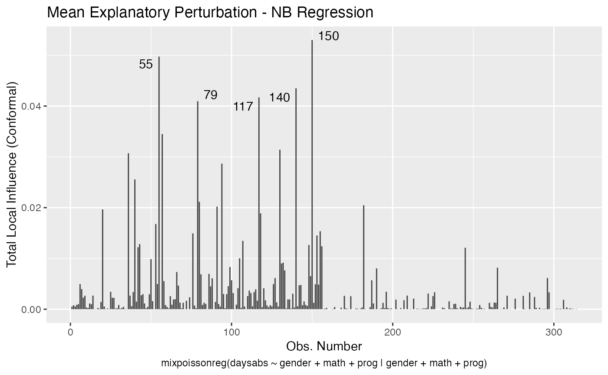
To change to normal curvature simply set the curvature argument to “normal”:
local_influence_plot(fit, curvature = "normal")and
local_influence_autoplot(fit, curvature = "normal")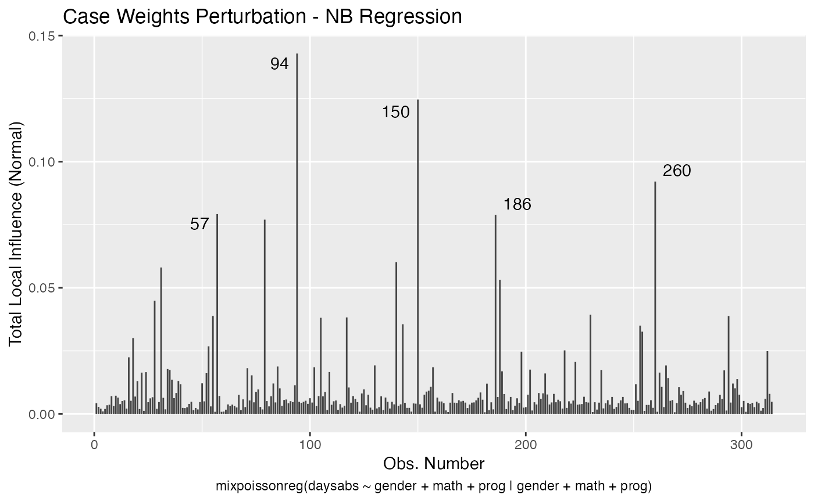
We can change the direction to the direction of largest curvature by setting the direction to “max.eigen”:
local_influence_plot(fit, direction = "max.eigen")
and
local_influence_autoplot(fit, direction = "max.eigen") 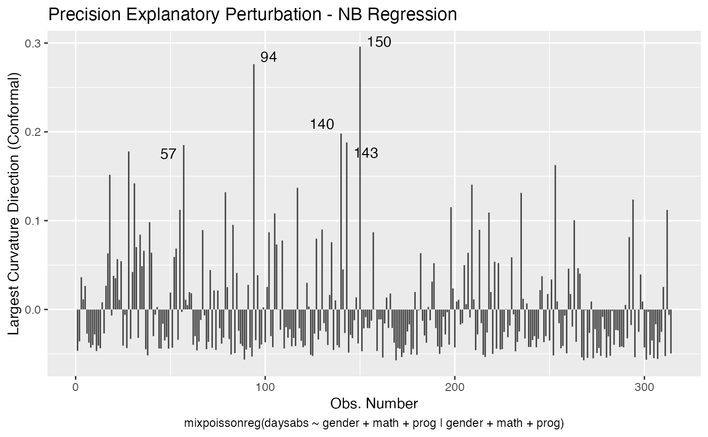
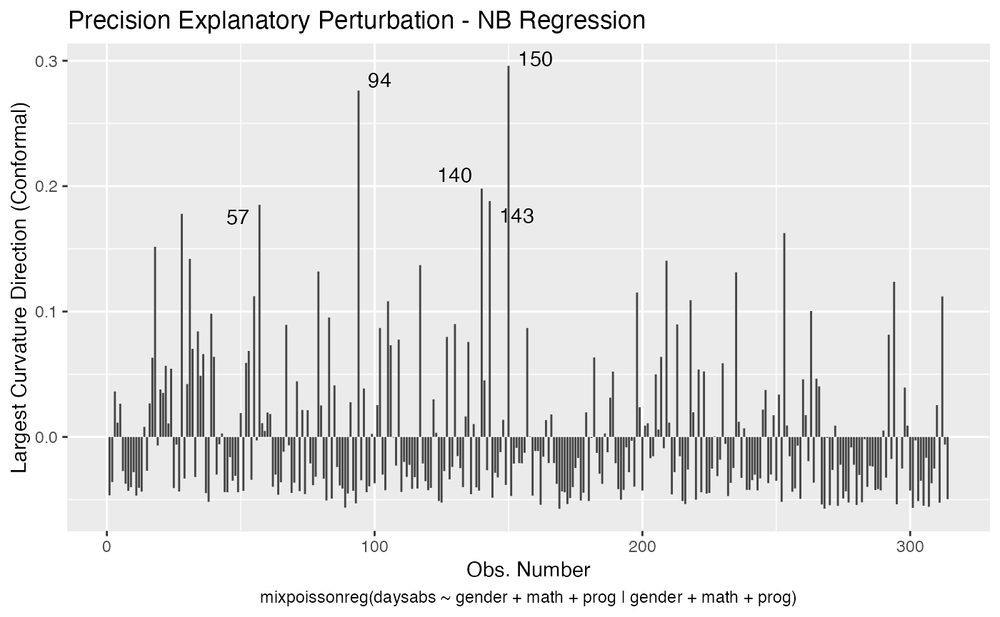
In this case the n.influential most extreme points are identified. We can change this number by changing the n.influential argument. We can also set the curvature to “normal”.
local_influence_plot(fit, direction = "max.eigen", curvature = "normal",
n.influential = 3)and
local_influence_autoplot(fit, direction = "max.eigen", curvature = "normal",
n.influential = 3)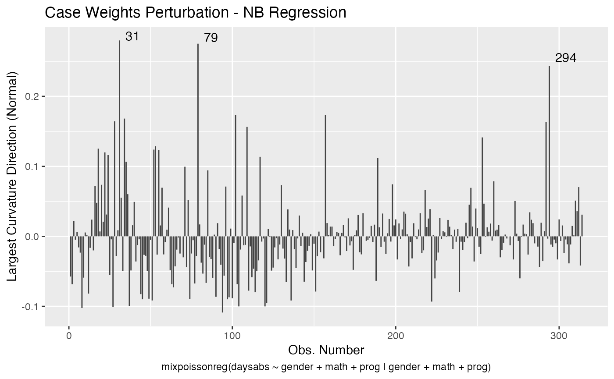
We can change the perturbations schemes to be displayed by providing a list or vector containing the numbers relative to the wanted perturbations. The number 1 is the case weights perturbation, number 2 is the hidden variable perturbation, number 3 is mean explanatory perturbation, number 4 is precision explanatory perturbation and number 5 is simultaneous explanatory perturbation.
local_influence_plot(fit, which = c(1,2))

and
local_influence_autoplot(fit, which = c(1,2))
We can draw the benchmark line (when direction is “canonical”) by setting the draw.benchmark argument to TRUE:
local_influence_plot(fit, draw.benchmark = TRUE)
and
local_influence_autoplot(fit, draw.benchmark = TRUE)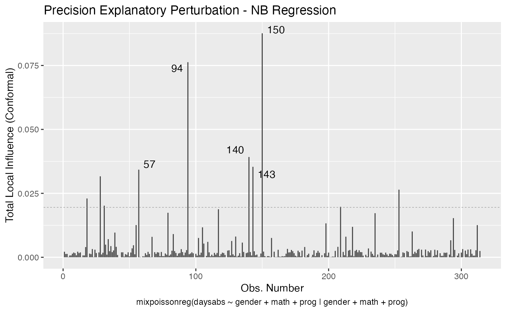
Finally, we can change the covariates by setting the mean.covariates and precision.covariates argument. Consider the fit_example we fit above:
set.seed(1234)
x1 <- rexp(200, rate = 2)
x2 <- rnorm(200)
x3 <- factor(as.integer(2*runif(200) + 1))
x4 <- as.integer(10*runif(200))
y <- stats::rnbinom(200, mu = exp(1-x1-x2-(x3==2)+0.1*x4),
size = exp(1+2*x1+x2))
fit_example <- mixpoissonreg(y ~ x1 + x2 + x3 + x4 | x1 + x2)We will consider the “mean explanatory”, “precision explanatory” and “simultaneous explanatory” perturbations with respect to the x1 covariate:
local_influence_plot(fit_example, which = c(3,4,5),
mean.covariates = "x1", precision.covariates = "x1")and
local_influence_autoplot(fit_example, which = c(3,4,5),
mean.covariates = "x1", precision.covariates = "x1")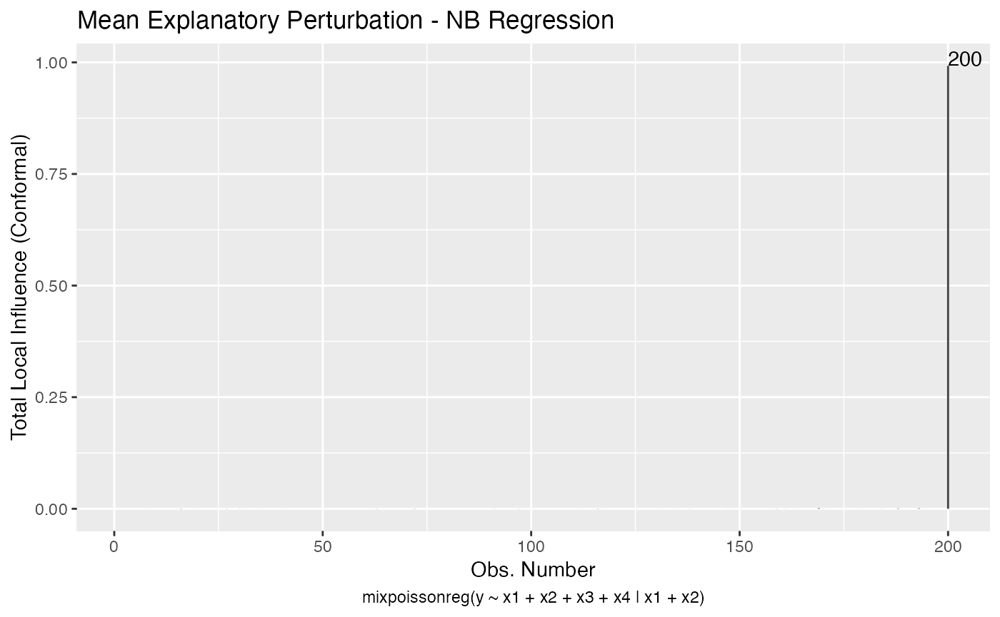
References
Barreto-Souza, W. and Simas, A.B. (2016) General mixed Poisson regression models with varying dispersion. Statistics and Computing volume 26, pp.1263-1280.
Cook, R. D. (1986) Assessment of Local Influence. Journal of the Royal Statistical Society. Series B (Methodological), Vol. 48, pp.133-169.
Cook, R. D. and Weisberg, S. (1982) Residuals and Influence in Regression. New York and London: Chapman and Hall.
Poon, W.-Y. and Poon, Y.S. (1999) Conformal normal curvature and assessment of local influence. Journal of the Royal Statistical Society. Series B (Methodological), Vol. 61, pp.51-61.
Pregibon, D. (1981) Logistic Regression Diagnostics. Ann. Stat. 9, 705-724.
Verbeke, G. and Molenberghs, G. (2000) Linear Mixed Models for Longitudinal Data. Springer-Verlag New York
Zhu, H.-T. and Lee, S.-Y. (2001) Local influence for incomplete data models. Journal of the Royal Statistical Society. Series B (Methodological), Vol. 63, pp.111-126.
Zhu, H.T., Lee, S.Y., Wei, B.C., Zhu, J. (2001) Case-deletion measures formodels with incomplete data. Biometrika, 88, 727–737.